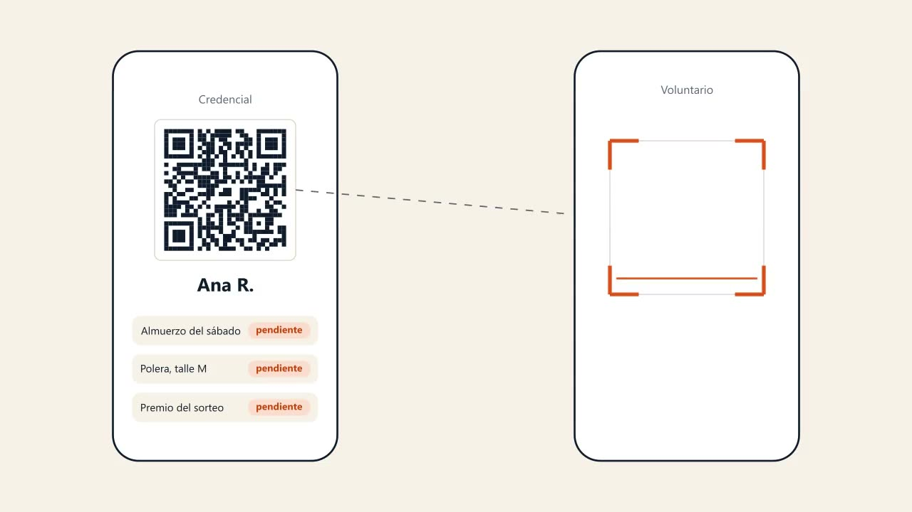

Eventos de comunidad sobre Stellar
Tu evento entero en un QR.
Inscribí gratis o cobrá entradas desde cualquier país, y manejá la puerta, los canjes y los premios con un solo QR.
- Cobro en segundos
- Canje una sola vez
- Funciona sin conexión
Hecho en Bolivia, en castellano y en inglés desde el primer día. Núcleo abierto con licencia MIT.
Primera versión andando en la red de prueba de Stellar: inscripción, credencial, escáner sin conexión, stands, panel, informe y servidor MCP, con el código en GitHub. Entrar con Google ya está en el código, a falta de probarlo con una cuenta real; los pagos reales vienen después.

- Almuerzocanjeado
- Polera, talle Mretirada
- Premio del sorteo: auricularesganado
Así se ve
De la inscripción al informe, en medio minuto.
Así lo vive una persona, y así lo ve quien organiza.

Ver la animaciónEs una animación del flujo hecha a mano, no una grabación. El MVP real, grabado, está más abajo, en Probalo.
Probalo
Hacé de cuenta que estás en el evento.
Tocá y recorré el flujo entero: te inscribís, te llega la credencial, un voluntario la escanea y el panel se entera. Es una maqueta: nada se guarda ni toca la red.
Y no es solo una maqueta: así anda el MVP real, grabado en la red de prueba de Stellar.
Ver el video, 1 minutoCómo funciona
Todos los del evento, en un solo lugar.
Hoy un evento de comunidad son seis herramientas y una planilla, y en muchos países no se puede cobrar. Ver el detalle
En buena parte del mundo quien organiza no puede cobrar entradas: las plataformas que ya usa piden una cuenta de Stripe, y Stripe no paga en su país. Bolivia es uno de esos países.
Rumbo está pensado para eventos de 80 a 500 personas con auspiciantes y varios beneficios: hackatones, DevFests, congresos de comunidad, bootcamps, meetups de capítulos.
Lo que hoy hacés con un formulario, un grupo de WhatsApp y una planilla, en un solo lugar, y con lo que se entrega bajo control.
Si organizás
Armá la página, cobrá y seguí todo en vivo. Ver más
- Armá el evento y publicá la página, con inscripción gratis o paga.
- Cobrá en dólares digitales (USDC); el QR del banco viene después. La plata te llega ya repartida.
- Imprimí las credenciales (en SVG) o dejalas en cada celular.
- Mirá el panel en vivo y mandale su informe a cada auspiciante.
- Si tu evento es gratis, Rumbo es gratis. Si cobrás, la comisión queda escrita en el contrato de tu evento, a la vista de cualquiera, y es la misma hasta el final.
Si asistís
Sin contraseña nueva, y con la credencial en el celular. Ver más
- Entrás con Google o con un código a tu correo. Sin contraseña nueva (la huella del celular, una passkey, viene después).
- Recibís un enlace personal a tu credencial (el correo viene después). Nunca llaves ni contraseñas.
- Tenés tu credencial en el celular y ves lo que te toca.
- Si pagaste y el evento se cancela, el pago protegido (próximamente) te va a devolver la plata solo.
Si sos voluntario
Escaneás y ves qué le toca a cada persona, sin entrenamiento. Ver más
- Escaneás el QR y ves qué le toca a esa persona.
- Marcás el canje. Si ya se canjeó, el escáner lo dice en grande y la fila sigue.
- Sin cuenta y sin entrenamiento. Funciona sin conexión y sincroniza después.
Si auspiciás
Ponés un beneficio y sabés cuántos se entregaron de verdad. Ver más
- Ponés un beneficio, como un café para cada asistente, y ves cuántos se canjearon.
- Te quedás con el contacto de quienes aceptan compartirlo en tu stand.
- Recibís el informe con lo que de verdad se entregó.
Para un meetup de veinte o una hackatón de trescientas.
Una hackatón
Inscripción por equipos, y los desayunos, almuerzos y cenas de cada día con su canje. Credenciales para mentores y jurado. Un sorteo entre quienes entraron, con la lista comprobable; el premio va a entrar a la credencial de quien ganó.
Un meetup
Un meetup o un DevFest: lista gratis, confirmación en pantalla y check-in en la puerta. Refrigerio y merch con canje, y un sorteo entre quienes de verdad vinieron.
Una conferencia
Una conferencia o un congreso: entradas de varios tipos, gratis o pagas, canjes con tope (40 kits del taller), stands que juntan contactos con permiso de cada persona, y un informe para cada auspiciante.
Una comunidad
Hoy la portada lista los eventos. Más adelante, una comunidad con calendario: todos los eventos de un GDG, de un capítulo o de una universidad en una sola página, con la gente que ya vino y su historial de asistencia.
Cómo se paga
Cobrá aunque Stripe no llegue a tu país.
Gratis es gratis
Si tu evento no cobra, Rumbo tampoco.
Si cobrás
La comisión queda escrita en el contrato, y la plata llega ya repartida.
En tu moneda o en USDC
En USDC desde cualquier país; con el QR de tu banco, en bolivianos, próximamente.
Quién paga
Las comunidades casi no tienen plata. Por eso paga otro.
- Entradas
- Merch y talleres
- Auspicios
- Eventos grandes
- Plan mensual
- Apps por uso
- Redes de comunidades
- Comunidades chicas, gratis
Ver el detalle
Con el QR de tu banco, en bolivianos (próximamente)
La persona va a pagar como paga todo: escaneando el QR de su banco. Una rampa con licencia convierte los bolivianos, y quien organiza recibe USDC al momento. Primero Bolivia, después cada país con su rampa.
En USDC, desde cualquier país
Con la cuenta que se crea sola al entrar con Google o con tu correo. Sin tarjeta, sin XLM y sin cuenta bancaria del otro lado.
Sin plata en el medio
El contrato reparte en la misma operación lo de quien organiza y la comisión. Rumbo nunca tiene la plata, y si el evento se cancela, el pago protegido (próximamente) la va a devolver solo.
En buena parte de Latinoamérica no se puede cobrar con Stripe, y las pasarelas locales piden empresa, papeles y días de espera. Acá la plata va de quien compra a quien organiza en una sola operación.
Los eventos gratis son gratis, y por ahí llega la gente. La comisión aparece cuando hay plata de por medio, y quien auspicia paga por saber qué pasó con lo que puso.
Si vendés entradas
Una comisión por entrada paga, escrita en el contrato del evento y menor que la de las plataformas con tarjeta en su plan gratis. Se cobra en la misma operación: nadie tiene la plata en el medio.
Si vendés merch o talleres
La misma comisión que una entrada. Lo que el evento vende (la polera, el kit del taller) va dentro de una entrada paga y entra a la credencial como un canje más.
Si auspiciás
Por campaña: "un café para cada asistente", con canje verificado, informe y los contactos del stand de quienes aceptan compartirlos.
Los eventos grandes
Por persona: credenciales, escáneres, varios días y tipos de entrada, informes. Hackatones, DevFests, congresos.
Si organizás seguido
Un plan mensual accesible, en USDC o en bolivianos, con más cupo, tu marca en la página y el historial de tu gente. Las comunidades chicas siguen gratis.
Las redes de comunidades
Una licencia por red, para todos sus capítulos, con los datos agregados. Es la forma de crecer sin vender de a uno.
Otras apps y agentes
Por uso, más adelante, cuando creen eventos a volumen por la API, pagando centavos en USDC. Para tus propios eventos, la API y el MCP son gratis.
Las comunidades chicas
Gratis, con un tope de personas por evento. Así empieza cualquier comunidad, y así se corre la voz.
Los precios se fijan con las primeras comunidades que lo usen, no antes.
¿Organizás un evento en diciembre? Queremos armarlo con vos.
Contanos de tu eventoPara capítulos de Stellar
Cada evento del capítulo, con su asistencia comprobada.
El programa de embajadores de Stellar cuenta un evento cuando tiene al menos veinte asistentes verificados. Rumbo deja esa cuenta lista, y cualquiera la puede comprobar.
Veinte, verificados
Cada entrada queda registrada en Stellar, y la cuenta sale sola: asistentes, sin oradores ni organización.
La comida, rendida
El canje del almuerzo dice cuántos comieron, para cuidar el tope por persona.
El reporte, armado
Asistencia, canjes y sorteo en un informe para el reporte del mes, sin nombres en la cadena.
Por qué Stellar
Lo que una base de datos no puede.
Cobrar desde cualquier país, con la comisión separada en la misma operación.
Vales de un solo uso, con cada canje anotado en la cadena, no en una planilla.
Una cuenta que queda para el próximo evento, sin necesitar XLM.
Ver los seis
Pagos protegidos, próximamente
La entrada va a quedar en un contrato hasta que el evento ocurra. Si se cancela, el reembolso sale solo.
Pagos a oradores y voluntarios, más adelante
Van a salir a cualquier país, en un clic. Sin cuentas bancarias de por medio ni comisiones de giro.
Una API que otras apps van a pagar por uso
Más adelante, otras plataformas y agentes van a crear eventos, credenciales y vales a volumen, pagando centavos en USDC con x402. Para tus propios eventos, la API y el MCP son gratis.
Para contar almuerzos alcanza una planilla. Esto es lo que suma Stellar. En la red de prueba el vale no es plata, pero el almuerzo sí es real.
Cómo está hecho
Un contrato, una app y un escáner.
- Quien asiste se inscribe y paga desde el celular, entrando con Google o con su correo.
- La app arma la página del evento, la credencial y el panel, en castellano y en inglés.
- El contrato en Stellar cobra y reparte en una operación, y marca el check-in y cada canje una sola vez. Adentro no hay nombres ni correos.
- El escáner del voluntario valida el QR sin red y sincroniza después. Quien organiza recibe la plata al momento y quien auspicia ve los canjes.
Un contrato en Soroban y una app en Next.js con Supabase. El stack, pieza por pieza.
Ver el detalle
Lo que garantiza que un vale se use una sola vez y que la plata llegue repartida vive en un contrato en Stellar. Todo lo demás es una app que cualquiera abre desde el celular.
Con qué se hace
Un contrato en Soroban, una app en Next.js con Supabase debajo, cuentas propias al entrar con Google o con el correo, con las comisiones patrocinadas, y un escáner que funciona sin conexión.
Nadie necesita XLM
Las comisiones de red las patrocina Rumbo. La persona entra con Google o con su correo y no ve nada técnico.
Ya hay una semilla
El contrato parte de un pase de evento escrito en septiembre de 2026 para Stellar Elite Bolivia, con nueve pruebas y una corrida en la red de prueba.
Abierto y conectado
Rumbo no quiere ser otra isla.
- API
- Servidor MCP
- Importar y exportar
- Avisos
- Sorteos comprobables
- Código abierto
Conectarse es gratis para tus eventos, y los datos son tuyos. Ver más
API, y webhooks después
Creá eventos, inscribí gente y leé check-ins y canjes desde tu sistema. Gratis para tus propios eventos; las plataformas que crean eventos a volumen van a pagar por uso.
Un servidor MCP
El asistente que ya usás arma el evento, carga la lista, manda los recordatorios y te lee el informe, con las mismas herramientas que usa la app.
Importar y exportar
Traé tu lista de Luma, de Bevy o de una planilla, y llevate todo a CSV cuando quieras (Google Sheets, después).
Avisos donde está la gente
La credencial, los recordatorios y los cambios de último momento van a llegar por correo, al calendario y por Telegram; hoy el enlace queda en pantalla.
Sorteos comprobables
Un sorteo entre quienes de verdad vinieron: la lista se congela con una huella que cualquiera puede recalcular, y el premio va a entrar a la credencial de quien ganó.
Código abierto con MIT
El contrato, el escáner y la plantilla del evento están en GitHub. Cualquier comunidad los monta, los adapta y aprende Stellar con su propio evento.
Cómo crece
De una comunidad a una red.
Cada etapa paga la siguiente.
-
1
Primero
Una comunidad
Credenciales, check-in y canjes en la red de prueba, gratis.
-
2
Después
Eventos que cobran
Entradas con pagos reales en USDC y auspicios con canje verificado.
-
3
Más adelante
Redes y plataformas
Licencias para redes y una API que otras apps pagan por uso.
Ver la hoja de ruta
Las comunidades traen a quienes auspician, los eventos que cobran traen a las redes, y las redes traen a las plataformas que quieren construir encima.
Primero: Una comunidad
- Página del evento con inscripción gratis o paga
- Plantillas e importar la lista de Luma o de Bevy
- Credencial con QR, en el celular y para imprimir
- Check-in y canjes con un escáner que funciona sin conexión
- Panel de quien organiza e informe para quien auspicia
- Un servidor MCP: el evento se arma desde tu asistente, contándolo en palabras
Después: Eventos que cobran
- Pago protegido con reembolso automático
- El correo con la credencial, y después webhooks y avisos por Telegram
- El premio de un sorteo entrando a la credencial de quien ganó
- Entrar con una passkey (la huella del celular)
- Credencial en Apple y Google Wallet
Más adelante: Redes y plataformas
- Pagos con el QR del banco en bolivianos
- Reventa al precio original
- API pagada por uso
- Pagos a oradores
- Licencias para redes de comunidades
Quienes programan en un GDG o en WTM aprenden Stellar adaptando el sistema de su propio evento. El servicio alojado es lo cómodo: el armado del evento, los correos, el tiempo real, los pagos y los informes.
Se aprende Stellar adaptando el código, y se cobra el servicio alojado.
Principios
Lo que Rumbo nunca hace
- Tener tu plata. Va directo a quien organiza.
- Cambiar moneda por su cuenta. Lo hace quien tiene licencia.
- Poner datos personales en la cadena. Ni nombres ni correos.
- Cobrar por eventos gratis.
- Mostrar tecnicismos. Lo técnico va plegado.
- Cerrar lo que abrió.
Ver el detalle
- Tener tu plata. Va directo a quien organiza o, cuando llegue el pago protegido, queda en el contrato.
- Cambiar moneda por su cuenta. Los bolivianos los convierte quien tiene la licencia.
- Poner datos personales en la cadena. Los nombres y los correos quedan fuera de la cadena y se usan solo para avisar. Los contactos del stand se comparten solo con permiso, en ese stand.
- Cobrar por eventos gratis. La comisión aparece cuando hay plata de por medio.
- Mostrar tecnicismos. Nadie en la puerta tiene que saber qué hay abajo. Lo técnico va plegado, para quien lo quiera leer.
- Cerrar lo que abrió. El contrato de canjes, el escáner y la plantilla del evento son de código abierto con MIT. El servicio alojado es lo que Rumbo cobra.
Las personas
El equipo
Rumbo se hace en Santa Cruz de la Sierra, Bolivia, por dos fundadores que organizan y viven estos eventos.
Producto y contratos
Desarrollo full stack
¿Organizás un evento en diciembre? Queremos armarlo con vos.
Contanos de tu eventoSi programás, las preguntas y las ideas van en un issue en GitHub.